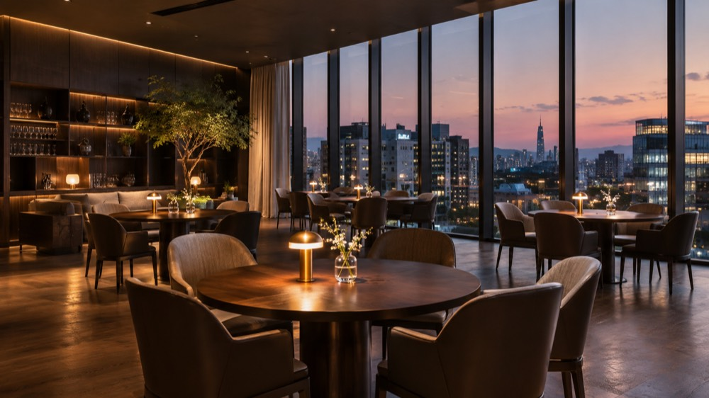

약사 · 서울 · INFJ
익숙한 길을 걷다가도 새로운 카페를 발견하면 기분이 좋아져요.
다음 라운드에는 4번으로 이동해요.
28세 · 약사 · INFJ · 3번 테이블
취향과 가치관을 살펴매니저가 신중하게 제안해 드려요.
대기업 재직 · 서울 · ENTP
상세 위치는 참가자에게 별도로 안내해요.
프로필 등록은 무료예요. 매칭 조건과 비용은 추천·연결 단계에서 안내해요. 이름과 사진은 본인의 공개 동의를 먼저 받아요.